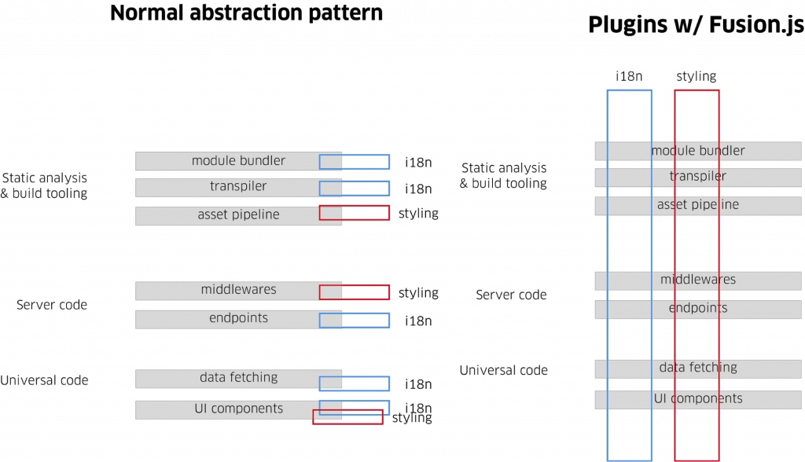
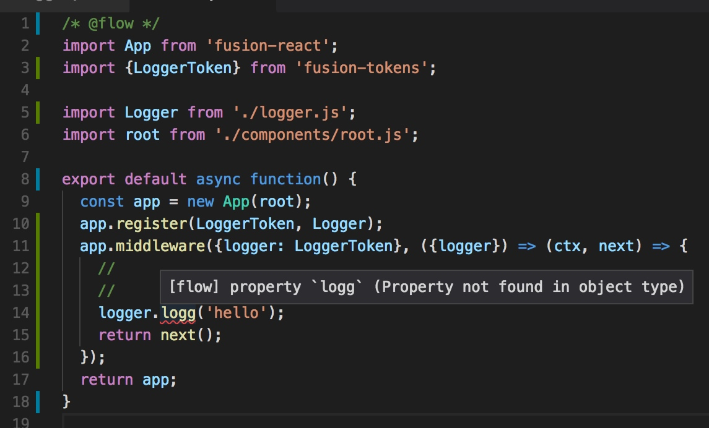
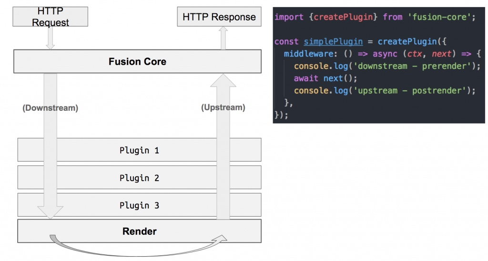

原文地址 https://www.infoq.cn/article/2018%2F08%2Fuber-Web-open-fusion-js
可能很多人都不知道，Uber 其实开发了很多基于 Web 的应用程序，可能有数百个，而且这个数字还在不断增加中，它们中的大部分被用在公司内部，用于管理各种业务。
我们知道，Web 技术变化得很快，而最佳技术实践也在不断发展。为数百名 Web 工程师提供高质量的框架和功能，同时又要保持 Web 平台的动态特性，一直以来都是一个巨大的挑战。
为了应对这一挑战，Uber 的 Web 平台团队开发了 Fusion.js，一个开源的 Web 框架，用于简化 Web 开发，并构建出高性能的轻量级 Web 应用程序。
动机
随着 Web 最佳实践的发展，Uber 需要改造已有的单体 Web 框架，解决长达数年的技术债务所带来的挑战。我们还希望让工程师们能够继续使用他们喜欢的技术（例如 React 和 Redux），同时保持与 Uber 健康监控基础设施的兼容性。
具体来说，我们希望核心框架能够解决以下痛点：
服务器端渲染、代码拆分和模块热加载所需的复杂配置和工具样板代码
在涉及服务器端渲染的 React 应用程序时，缺乏用于实现和共享特性的良好抽象
不同位置的代码紧密耦合而导致的脆弱性
测试难度攀升
单体框架缺乏灵活性
虽然现有的解决方案解决了其中的一些挑战，但我们发现，基于框架添加新库通常需要修改多个不相关的文件。例如，要让可进行服务器端渲染的应用程序支持 Redux, 通常需要在服务器相关的文件中添加代码，并在客户端添加类似的代码，还要向 HTML 模板中添加 hydration 代码，使用 React Provider 组件等。要集成 i18n 库或添加浏览器性能指标库也是一样。
很多特定于应用程序的代码可能会依赖用于管理副作用的库（例如用于日志记录或数据持久化的库），工程师很难在没有服务层抽象的帮助下以可测试的方式集成这些库。
我们既希望能够为与 Uber 现有库集成提供简单且经过实战考验的解决方案，也希望能够避免使用单体框架，从而保持捆绑包的小体积。
我们倾向于选择模块化方法的另一个原因是，我们必须明确指定依赖关系，这样可以更容易避免技术债务，如 God Object（https://en.wikipedia.org/wiki/God_object）、临时内部接口和紧密耦合。
Fusion.js 是我们努力的结晶。
谁应该使用 Fusion.js？
简单地说，Fusion.js 是一个 MIT 许可的 JavaScript 框架，支持 React 和 Redux 等流行库，并提供了很多现代特性，如模块热加载、数据感知服务器端渲染和捆绑拆分支持。
除了预配置的样板，Fusion.js 还提供了灵活的基于插件的架构。因此它非常适合用于现代单页应用程序以及依赖复杂服务层来满足各种质量要求的现代 Web 应用程序。
有关 Fusion.js 的更多信息，请查看项目文档。
基于插件的架构
Fusion.js 应用程序是通用的，也就是说它有一个单入口文件，并且可以在服务器和浏览器上重用代码。在通用的应用程序中，React 组件还可以获取数据并在服务器上渲染 HTML，从而可以利用浏览器的原生 HTML 解析器和避免 JavaScript DOM API 的开销来减少页面加载时间。
单入口架构使 Fusion.js 插件本身也具有通用性，插件开发人员可以将代码片段与代码所属的库放在一起，而不是与代码运行的环境放在一起。

Fusion.js 插件基于逻辑分组封装逻辑，而不是基于需要添加代码的位置
插件可以通过中间件访问 HTTP 请求生命周期，也可以访问 React 树，以便添加 Provider 组件。它们还可以初始化浏览器代码。
最后，由于这些特性，我们可以通过单行代码将库安装到应用程序中，无论库需要多少个不同的集成点。由于插件易于添加和删除，因此在重构时也很容易推断它们之间的耦合度、对包大小的影响以及其他代码质量属性。它们也可以初始化浏览器代码。
类型依赖注入
插件利用了依赖注入，这意味着它们可以将定义良好的 API 作为服务暴露给其他插件，并且在测试期间可以轻松地模拟插件的依赖项。当依赖关系负责与数据存储基础设施打交道或与可观察性（例如日志记录、分析和指标）相关时，这一点尤为重要。
复制代码
/*这个例子实现了一个从 session 读取数据的端点。Session 是通过依赖注入的方式提供的。SessionToken 是一个标签 (用于确保类型安全)。*/ // src/plugins/user.jsimport {createPlugin} from 'fusion-core';import {SessionToken} from 'fusion-tokens'; export default __NODE__ && createPlugin({ deps: {Session: SessionToken}, middleware({Session}) { return async (ctx, next) => { if (ctx.path === '/api/user') { ctx.body = JSON.parse(await Session.from(ctx).get('user')); } return next(); } }});
还可以借助 Flow.js 来确保依赖之间的静态类型安全，如下所示：

直接在代码编辑器中显示错误有助于在代码运行之前捕获错误
中间件管理
几年前就存在这样的一个挑战，流行的 HTTP 服务器库 Express 有一个 API 让复杂的响应转换变得难以封装和测试。在 Uber 以前的架构中，应用程序开发人员经常需要采用临时包含 Express 请求 / 响应对象的特定补丁。自然而然地，因为子系统对时间要求的高度耦合，测试变得极其困难。
在开始设计 Fusion.js 时，我们就一直关注这个问题。经过大量调研，我们决定使用 Koa（https://koajs.com），它提供了基于上下文的 API，对单元测试非常友好，并为请求生命周期管理提供了一个基于下游和上游概念的轻量级抽象。
事实证明，采用 Koa 是一个正确的设计决策。
Koa 中间件为 React Provider 组件提供逻辑集成点，下游 / 上游抽象与 React 服务器渲染上下文的生命周期完美匹配。网络副作用与应用程序逻辑分离，从而提高了可测性。
Fusion.js 的依赖注入和图解析机制解决了困扰我们已久的 God Object 和操作顺序问题。

Fusion.js 核心将网络副作用与应用程序状态隔离开来，并利用 Koa 和 DI 来实现子系统之间的松散耦合
可测性
在过去的几年里，JavaScript 生态系统中出现了大量高质量的测试工具，并提高了对测试技术的认识。
除了支持 Jest、Enzyme 和 Puppeteer 等现代测试工具外，Fusion.js 还为开发人员提供了测试插件的工具。fusion-test-utils 包允可用于模拟服务器本身，从而可以在插件和各种桩的组合上快速运行集成测试。
前行之路
在 Uber 内部，已有 60 多个项目代码库在使用 Fusion.js。我们预计这个数字会继续增加，因为新的 Web 项目也在不断创建，同时旧项目被自动迁移到 Fusion.js。因此，框架级别的改进应该能够显著改善这些项目的软件质量基准。
我们的路线图包括添加更多的性能优化和面向测试的工具，以及更好的 Flow 支持。
项目地址：https://github.com/fusionjs
查看英文原文：https://eng.uber.com/fusionjs/
感谢覃云对本文的审校。